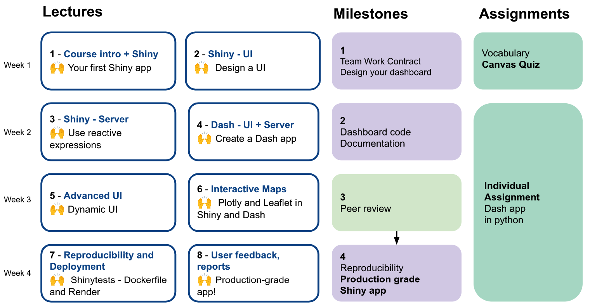
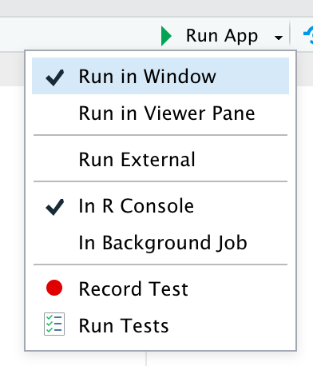
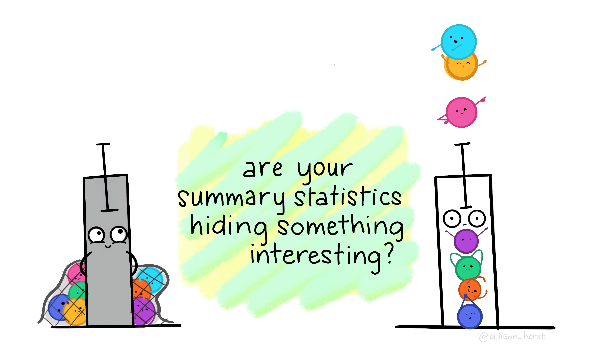
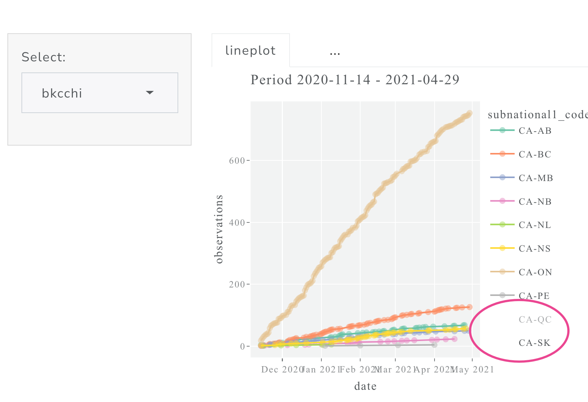

L3 - Server: development workflow and reactive expressions
Lecture 3
Creating a complex app (>3 outputs)
How to wrap
ggplot2anddplyrfunction in a Shiny app? (tidyevaluation)How can we improve our development workflow?
How to avoid code duplication? Intro to reactive expressions.
🙌 Today’s goal
Create a complex app and use reactive expressions
Mastering Shiny
🙌 Today’s goal
Create a complex app and use reactive expressions
DSCI 532 Overview
Creating a complex app (>3 outputs)
Creating a complex app
leafletmapDTtableggplot()+ggplotly()
The road to a production-grade app
- Motivation and purpose
- Select the results/metrics based on your target audience
- Choose presentation method and interactivity
- Design the app (sketch)
- Write the code of the app following a workflow
- Ensure the app’s reproducibility and deploy it
Adapted from: Rasmussen, N. H., Bansal, M., & Chen, C. Y. (2009). Business dashboards: a visual catalog for design and deployment. John Wiley & Sons.
pre-DEMO: Dataset
My data: FeederWatch
𓅮𓅮𓅮
FeederWatch is a survey of birds that visit backyards, nature centers, community areas, and other locales in North America.
Citizen scientists count birds in areas with plantings, habitat, water, or food that attracts birds.
People count birds as long as they like on days of their choosing, then enter their counts online.
FeederWatch Dataset Tidytuesday - FeederWatchProject
Target audience
“Citizen-scientists” participating in the program
Goal 𓅮 Create an app that allow to identify program contributions and to promote future contributions.
Dataset: data quality
VALID = 0
Observation triggered a flag by the automated system
VALID = 0; REVIEWED = 0
Note that such observations should only be used with caution.VALID = 0; REVIEWED = 1;
Insufficient evidence was provided to confirm the observation.
Dataset: Data quality
VALID = 1
Observation did not trigger the automatic flagging system
VALID = 1; REVIEWED = 0
Accepted into the database without review.VALID = 1; REVIEWED = 1
Approved by an expert reviewer.
DEMO: data and app basic structure
Leaflet
Leaflet is one of the most popular open-source JavaScript libraries for interactive maps
Leaflet
Basic Usage
- Create a map widget by calling
leaflet(). - Add layers (i.e., features) to the map by using layer functions (e.g.
addTiles,addMarkers,addPolygons) to modify the map widget. - Repeat step 2 as desired.
- Print the map widget to display it.
Comparing leaflet and ggplot2
- Leaflet uses
|>instead of+to separate layers - Similar to
ggplot2, each function is a layer/feature - If you are using a data frame you need to specify
latitudeandlongitude
In L6 we will learn how to create maps with polygons!
Comparing leaflet and ggplot2
The Formula Interface (~)
The arguments can take a one-sided formula, in which case the formula will be evaluated using the data argument as the environment.
For example, ~x means the variable x in the data object, and you can write arbitrary expressions on the right-hand side, e.g., ~ sqrt(x + 1).
DEMO: map
Extra: Too many points?
How can we improve our development workflow?
Basic development cycle
Creating the app
Use a snippet to add the basic structure:
Basic development cycle
Seeing your changes
- Write some code.
- Launch the app with
Cmd/Ctrl+Shift+Enter. - Interactively experiment with the app.
- Close the app.
- Go to 1.
Basic development cycle
Seeing your changes
- Write some code.
2. Launch the app withCmd/Ctrl+Shift+Enter.
- Interactively experiment with the app.
4. Close the app.
- Go to 1.
options(shiny.autoreload = TRUE) ✅
You can also create a job to simplify the workflow
Basic development cycle
Seeing your changes
Reloading the app frequently will avoid the “accumulation” of errors.
Basic development cycle
Controlling the view
The run app button allows you to choose how the running app will be shown. 
Mastering Shiny
Debugging
Once you eliminate the impossible, whatever remains, no matter how improbable, must be the truth — Sherlock Holmes
Mastering Shiny
When you are developing a reactive web app:
- The code is not being executed the way you are used to. Now, the lines of your code are connected 🔌
- You can’t run the code line by line anymore!!!
This means that your app will work ✅ or will not work 🐛
Debugging 🐛
- You get an unexpected error. ->
traceback - You don’t get any errors, but some value is incorrect. ->
interactive debugger - All the values are correct, but they’re not updated when you expect. -> 🤷♀️
Interactive debugger: Object of type closure is not subsettable
Debugging 🐛
Unexpected error: tracebacks in Shiny
Debugging 🐛
Unexpected error: tracebacks in Shiny
Error in *: non-numeric argument to binary operator
169: g [app.R#4]
168: f [app.R#3]
167: renderPlot [app.R#13]
165: func
125: drawPlot
111: <reactive:plotObj>
95: drawReactive
82: renderFunc
81: output$plot
1: runAppIf you want to know more check the case study
Debugging 🐛
Debugging reactivity
The hardest type of problem to debug is when your reactive fire in an unexpected order. You can use these functions to read in your console how any parto fo your code is evaluated .
print()message()(+glue())str()
Debugging 🐛
Debugging reactivity
Final debugging tip! 🐛
- Run the server code first outside the app to check that is working. It could be more difficult to detect errors if you have not checked this after moving the code to the app.
DEMO: debugging techniques! 🐛
DT tables
Arguments: read using DT in Shiny
How to avoid code duplication? Intro to reactive expressions.
Code duplication
In traditional R scripting, we use two techniques to deal with duplicated code:
we capture the value using a variable, or
capture the computation with a function.
Are these strategies going to work in our Shiny apps?
Read sections 13.2.1 and 13.2.2 of Mastering Shiny if you want to know more
Reactive expressions
For Shiny apps to be maximally useful, we need reactive expressions and outputs to update if and only if their inputs change
DEMO: Adding reactive({}) functions
Tidyevaluation
Tidyevaluation in Shiny Apps
How to wrap ggplot2 and dplyr function in a Shiny app?
Normally when using tidyverse functions you type the name of the variable directly in the function call.
But now you want to refer to it indirectly: the variable (
carat) is stored inside another variable (input$var).
Tidyevaluation in Shiny Apps
How to wrap ggplot2 and dplyr function in a Shiny app?
⚠️ If in your Shiny app you write:
⚠️ dplyr ‘thinks’ you have asked for:
instead of:
chapter 12 - Mastering Shiny
Tidyevaluation in Shiny Apps
Solution: use .data[[ ]]
ggplot2::aes()
server <- function(input, output, session) {
output$plot <- renderPlot({
ggplot(iris, aes(.data[[input$x]], .data[[input$y]])) +
geom_point(position = ggforce::position_auto())
}, res = 96)
}chapter 12 - Mastering Shiny
DEMO: tidyevaluation in ggplot2
Let’s think: Are bar plots always the best choice?
Boxplots, violin plots and density plots could be interesting choices…
Image: Allison Horst
Feederwatch app
Is this the best way to visualize the data?
To be continued in lecture 5
{.absolute width = 300}
Learning outcomes
- Create a Shiny app with more than 3 outputs
- Include a
leafletmap, aDTtable and aPlotlychart in a Shiny App - Deal with tidyevaluation in a Shiny app
- Set a workflow to develop a Shiny App efficiently in RStudio
- Avoid code duplication through the use of reactive expressions in a Shiny App